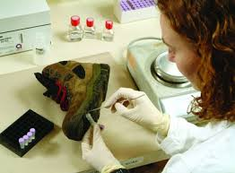

A Forensic Scientist is a technician who helps investigate crime scenes by collecting and analyzing evidence. They also write reports if they find anything important, and they also work in the lab to analyze anything. A Forensic Scientist can work many long hours whether it is day or night.
 Back to Home Page